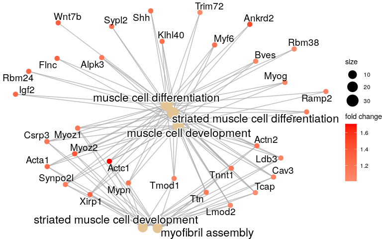

DE genes to functional enrichment in R
Questions
- How to perform enrichment analysis in R (RStudio)?
- How to visualise functionally enriched Gene ontologies (GO) / pathways as networks?
Objectives
- Perform Functional enrichment analysis of the DE genes in
R
Gene Ontology (GO) over-representation analysis
- We will be using the R-package clusterProfiler to perform over-representation analysis on GO terms.
- The tool takes as input a list of significant genes (DEGs in this case) and a background gene list to perform statistical enrichment analysis using hypergeometric testing.
- The basic arguments allow the user to select the appropriate organism and GO ontology (BP, CC, MF) to test.
Prepare input and filter for up and down regulated genes
- Filter by padjust and log fold change.
# P adj < 0.05
sig <- res_tidy.DE[res_tidy.DE$p.adjusted < 0.05, ]
# Upregulated: LFC > 1, remove NAs
sig.up <- sig[sig$estimate > 1, ]
sig.up <- na.omit(sig.up)
sig.up.LFC <- sig.up$estimate
names(sig.up.LFC) <- sig.up$gene
# Sort by LFC, decreasing
sig.up.LFC <- sort(sig.up.LFC, decreasing = TRUE)
# Downregulated: LFC < 1, remove NAs
sig.dn <- sig[sig$estimate < 1, ]
sig.dn <- na.omit(sig.dn)
sig.dn.LFC <- sig.dn$estimate
names(sig.dn.LFC) <- sig.dn$gene
# Sort by LFC, decreasing
sig.dn.LFC <- sort(sig.dn.LFC, decreasing = TRUE)Genes Down-regulated in WT
The function enrichGO()
The clusterProfiler package implements enrichGO() for gene ontology over-representation test.
ego.up <- enrichGO(gene = names(sig.up.LFC),
OrgDb = org.Mm.eg.db,
keyType = 'SYMBOL',
readable = FALSE,
ont = "ALL",
pAdjustMethod = "BH",
pvalueCutoff = 0.05,
qvalueCutoff = 0.2)Bar plot
- Bar plot is the most widely used method to visualize enriched terms.
- It depicts the enrichment scores (e.g. p-values) and gene count or ratio as bar height and color.
barplot(ego.up, showCategory=20){width=70%}
Dot plot
- A Dot plot is similar to a scatter plot and bar plot with the capability to encode another score as dot size.
- In R the dot plot displays the index (each category) in the vertical axis and the corresponding value in the horizontal axis, so you can see the value of each observation following a horizontal line from the label.
dotplot(ego.up, showCategory=20,font.size = 10){width=70%}
cnetplot
- Both the barplot and dotplot only displayed most significant enriched terms, while users may want to know which genes are involved in these significant terms.
- The cnetplot depicts the linkages of genes and biological concepts (e.g. GO terms or KEGG pathways) as a network.
cnetplot(ego.up,
categorySize="pvalue",
foldChange=sig.up.LFC,
cex_label_gene = 1,
showCategory = 5,cex_label_category=1.2,shadowtext='category')
Heatmap-like functional classification
- The heatplot is similar to cnetplot, while displaying the relationships as a heatmap.
- The gene-concept network may become too complicated if user want to show a large number significant terms.
- The heatplot can simplify the result and more easy to identify expression patterns.
heatplot(ego.up)
Challenge #1
- Do you find any of the top enriched GO categories relavant to the experiment?
- If so what is your deduction? Do you feel RNA-seq experiment has helped ?
Solution
My Solution here
Challenge #2
- Can you perform similar analysis for genes which are UP-regulated in WT?
Solution
Genes Up-regulated in WT
ego.dn <- enrichGO(gene = names(sig.dn.LFC),
OrgDb = org.Mm.eg.db,
keyType = 'SYMBOL',
readable = FALSE,
ont = "ALL",
pAdjustMethod = "BH",
pvalueCutoff = 0.05,
qvalueCutoff = 0.2)Bar plot
barplot(ego.dn, showCategory=20)
Dot-plot
dotplot(ego.dn, showCategory=20,font.size = 10)
cnetplot
cnetplot(ego.dn,
categorySize="pvalue",
foldChange=sig.dn.LFC,
cex_label_gene = 0.7,
showCategory = 5,cex_label_category=1.5,shadowtext='category')
Heatmap-like functional classification
heatplot(ego.dn)Challenge #3
- What about the GO categories for the genes found UP-regulated in WT? Any interesting find?
Solution
My Solution here
Key points
- This is a key point
- Another one
All materials copyright Sydney Informatics Hub, University of Sydney